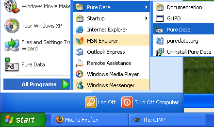

Starting Pure Data
Now that you have Pd-Extended installed on your computer and configured, let's look at different ways to start it--from simply clicking an icon through starting from the command line and adding different startup flags or using a script to save different sets of startup information.
Starting via an icon
There are two ways of starting Pure Data. The way that will be used most commonly on Windows or Mac OS X will be to click on the icon which the installer put in your "My Programs" or "Applications" folder. On Windows, this is "Start -> Pure Data -> Pure Data".

On Linux, your system may also have a menu bar, such as "Programs/Multimedia" or "Programs/Sound" where Pd can be started by clicking the menu item.
Starting via command line
The other way is to open Pd from the terminal or shell via a command line. This is most often done on Linux, but it can be done this way on any platform. To do this, one must know the location of the Pd application on his/her system, which can be different depending on where Pd was installed.
Linux (from xterm)
/usr/local/bin/pdMac OSX (from Terminal.app)
/Applications/Pd-extended.app/Contents/Resources/bin/pdWindows (from the DOS shell or Command Prompt)
C:\Program Files\pd\bin\pd.exe
Why would we want to open Pd by command line? The most common reason would be is if we wanted to use a different set of flags than the default ones. For example, if you were using Pd in a live performance, and you wanted it to open up the same patch whenever you started it in this situation, you might use the command:
/usr/local/bin/pd -open /home/pdfreek/liveset.pd
Which would start Pd and open the patch liveset.pd. You could also add other startup flags, such as which soundcard and drivers to use, which external libraries to load or which search paths to add. Flags are additional pieces of information which can alter the configuration of Pd for that particular startup, rather than the pdsettings which we looked at in the ConfiguringPd chapter, which affect the program every time it starts.
Like almost any program launched by command line, you can add the flag "--help" to see a long list of configuration options, which gives you some idea of the different possibilities for starting up Pd:
$ /Applications/Pd-0.39.2-extended-test4.app/Contents/Resources/bin/pd --help
usage: pd [-flags] [file]...
audio configuration flags:
-r <n> -- specify sample rate
-audioindev ... -- audio in devices; e.g., "1,3" for first and third
-audiooutdev ... -- audio out devices (same)
-audiodev ... -- specify input and output together
-inchannels ... -- audio input channels (by device, like "2" or "16,8")
-outchannels ... -- number of audio out channels (same)
-channels ... -- specify both input and output channels
-audiobuf <n> -- specify size of audio buffer in msec
-blocksize <n> -- specify audio I/O block size in sample frames
-sleepgrain <n> -- specify number of milliseconds to sleep when idle
-nodac -- suppress audio output
-noadc -- suppress audio input
-noaudio -- suppress audio input and output (-nosound is synonym)
-listdev -- list audio and MIDI devices
-jack -- use JACK audio API
-pa -- use Portaudio API
(default audio API for this platform: portaudio)
MIDI configuration flags:
-midiindev ... -- midi in device list; e.g., "1,3" for first and third
-midioutdev ... -- midi out device list, same format
-mididev ... -- specify -midioutdev and -midiindev together
-nomidiin -- suppress MIDI input
-nomidiout -- suppress MIDI output
-nomidi -- suppress MIDI input and output
other flags:
-path <path> -- add to file search path
-nostdpath -- don't search standard ("extra") directory
-stdpath -- search standard directory (true by default)
-helppath <path> -- add to help file search path
-open <file> -- open file(s) on startup
-lib <file> -- load object library(s)
-font <n> -- specify default font size in points
-typeface <name> -- specify default font (default: courier)
-verbose -- extra printout on startup and when searching for files
-version -- don't run Pd; just print out which version it is
-d <n> -- specify debug level
-noloadbang -- suppress all loadbangs
-stderr -- send printout to standard error instead of GUI
-nogui -- suppress starting the GUI
-guiport <n> -- connect to pre-existing GUI over port <n>
-guicmd "cmd..." -- start alternatve GUI program (e.g., remote via ssh)
-send "msg..." -- send a message at startup, after patches are loaded
-rt or -realtime -- use real-time priority
-nrt -- don't use real-time priority
To learn more about Pd's startup options, please see the Configuring Pd chapter.
Starting from a script
Once you have created a command line for your specific situation, you can save that command as a script, which is a short file containing a list of commands, which can be run by typing its name in the terminal or shell. The exact format of your script depends on which operating system you use.
Windows
Windows uses the DOS language for its commands, so we must create a .bat (DOS batch) file containing the location of the Pd program and the startup flags we want to use. Using a simple text editor, make a file named "pdstart.bat", and place the following in it, for example
"c:\pd\bin\pd.exe" -font 10 -path "c:\pd\doc\vasp" -lib cyclone -lib iem_t3_lib -lib iem_mp3 -lib mjLib -lib OSC -lib percolate -lib vasp -lib xeq -lib xsample -lib zexy -lib iemlib1 -lib iemlib2 -listdev %1 %2 %3 %4 %5 %6 %7 %8 %9
Though it may appear to be many lines, this command must in fact be one long line with no breaks. If the version of Windows you are running has a "Save as type" option, choose the type "All files" to prevent your .bat file from being saved as a text file. Once this is saved, you can double-click on the file to run it.
Linux and OS X
Since both Linux and OS X use the same Unix-type system to interpret and run command lines, the process for creating a script is the same for both. In your favorite text editor, create a new file and start it with the line:
#! /bin/bash
which tells the operating system that what it is reading is a script, and that it will use the bash command line interpreter. On the line below that, copy this or a similar line:
/usr/local/lib/pd -font 10 -path /home/pdfreek/pd/my_abstractions -lib cyclone -lib iem_t3_lib -lib iem_mp3 -lib mjLib -lib OSC -lib percolate -lib vasp -lib xeq -lib xsample -lib zexy -lib iemlib1 -lib iemlib2 -open /home/pdfreek/pd/liveset3.pd
This should be all in one line, with no breaks. Please note that you should give it the correct path to the Pd program in the beginning (which could be different if you are running OS X for example), and you should replace the example flags with ones of your own.
Once you have written and saved this file with the .sh (shell script) file extension, such as "start_pd.sh", you must make it executable as a script with the following command:
chmod +x start_pd.sh
After you have done this, you can start this script, which will run Pd with all the flags you have added to it, by typing:
sh start_pd.sh
Some Linux window managers such as KDE or Gnome may support double-clicking to start shell scripts either by default or by selecting the default application. On OS X, you could configure the Finder to open .sh files with the Terminal.app by default (but then you would have to manually chose to open them with TextEdit.app for editing later on).
Advanced scripting for starting Pd
One of the beautiful things about the Unix system, which both Linux and OS X are based on, is that it is designed to allow many applications to communicate with each other and work together. This means that shell scripts can be constructed to do an enormous amount of tasks.
For example, the following script for Linux starts the JACK audio server (with some flags of its own), opens the Qjackctl interface for JACK and then starts Pd with the -jack flag and the -open flag listing two specific files:
#! /bin/bash jackd -d alsa -d hw -r 44100 -p 1024 -s & /usr/bin/qjackctl & sleep 5 ; /usr/local/bin/pd -jack -open /home/derek/pd/delnet/delaynet.pd:/home/derek/pd/echoplex_footswitches/midiswitches.pd
The ampersand (&) between the commands means that the command preceeding it will be run in the background. In other words, the previous command will keep running while we execute the next ones, instead of quitting. The section "sleep 5" tells the shell to wait 5 seconds before running the next command, in this case in order to give JACK time to start up. The semicolon (;) is used to seperate jobs, meaning that the next command won't be run until the previous one is finished (in the case of "sleep 5") or sent to the background (in the case of the ampersand symbol).
This script could be expanded to open other applications (in the following case, the looping application SooperLooper), use the aconnect application to make ALSA MIDI connections from Pd to SooperLooper, and use the jack_connect command to make audio connections between Pd, SooperLooper and 6 channels of a sound card via the JACK audio server:
#! /bin/bash jackd -d alsa -d hw -r 44100 -p 1024 -s & /usr/bin/qjackctl & sleep 5 ; /usr/local/bin/pd -jack -open /home/derek/pd/delnet/delaynet.pd:/home/derek/pd/echoplex_footswitches/midiswitches.pd & sleep 5 ; /usr/local/bin/sooperlooper -L /home/derek/pd/echoplex_footswitches/3loops.slsess -m /home/derek/pd/echoplex_footswitches/3loops.slb & sleep 5 ; /usr/local/bin/slgui & sleep 5 ; aconnect 'Pure Data':1 'sooperlooper_1':0 ; jack_connect alsa_pcm:capture_1 sooperlooper_1:common_in_1 ; jack_connect alsa_pcm:capture_2 sooperlooper_1:common_in_2 ; jack_disconnect alsa_pcm:capture_1 pure_data_0:input0 ; jack_disconnect alsa_pcm:capture_2 pure_data_0:input1 ; jack_disconnect alsa_pcm:capture_3 pure_data_0:input2 ; jack_disconnect alsa_pcm:capture_4 pure_data_0:input3 ; jack_connect alsa_pcm:capture_3 pure_data_0:input0 ; jack_disconnect pure_data_0:output0 alsa_pcm:playback_1 ; jack_disconnect pure_data_0:output1 alsa_pcm:playback_2 ; jack_disconnect pure_data_0:output2 alsa_pcm:playback_3 ; jack_disconnect pure_data_0:output3 alsa_pcm:playback_4 ; jack_connect pure_data_0:output0 alsa_pcm:playback_7 ; jack_connect pure_data_0:output1 alsa_pcm:playback_8 ; jack_connect sooperlooper_1:loop0_out_1 alsa_pcm:playback_1 ; jack_connect sooperlooper_1:loop0_out_2 alsa_pcm:playback_2 ; jack_connect sooperlooper_1:loop1_out_1 alsa_pcm:playback_3 ; jack_connect sooperlooper_1:loop1_out_2 alsa_pcm:playback_4 ; jack_connect sooperlooper_1:loop2_out_1 alsa_pcm:playback_5 ; jack_connect sooperlooper_1:loop2_out_2 alsa_pcm:playback_6
Detailed syntax for aconnect and jack_connect can be found by typing:
aconnect --help
or
jack_connect --help
Bash shell scripting is a huge area to investigate, curious readers are encouraged to check out one of the many websites and books detailing the Bash environment.